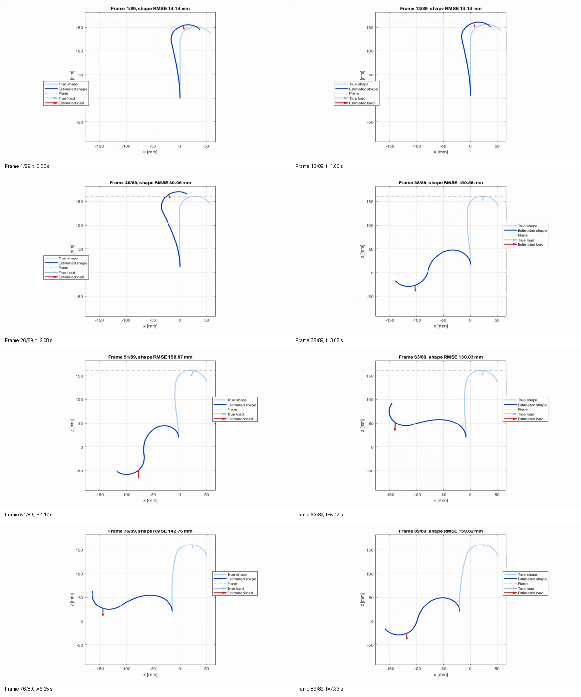
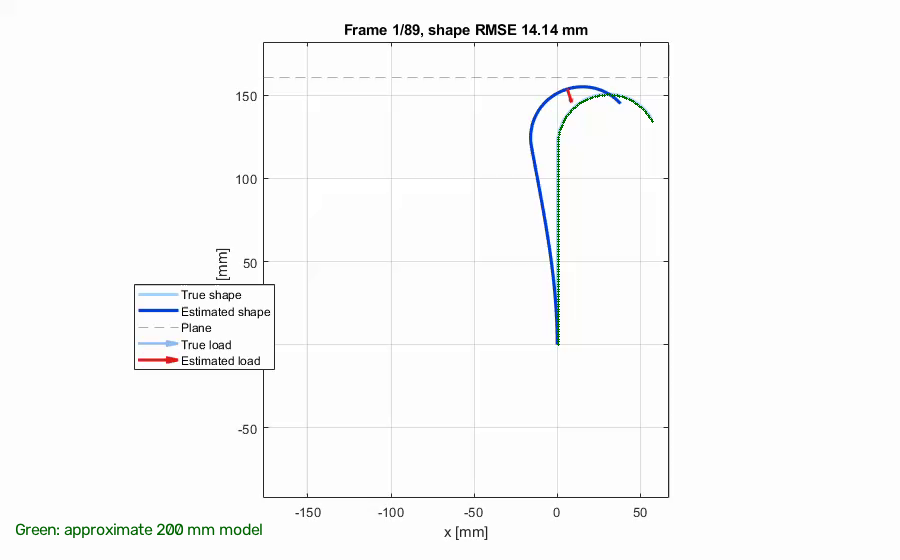
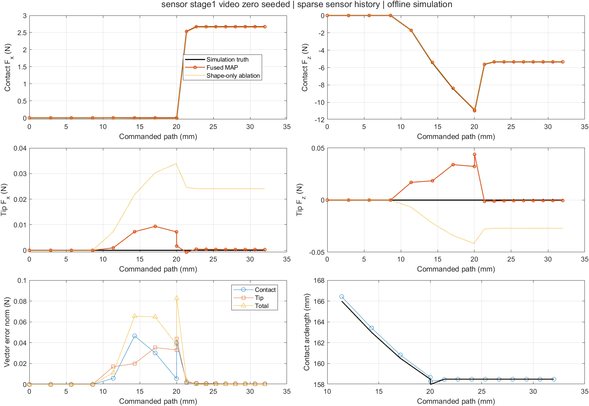
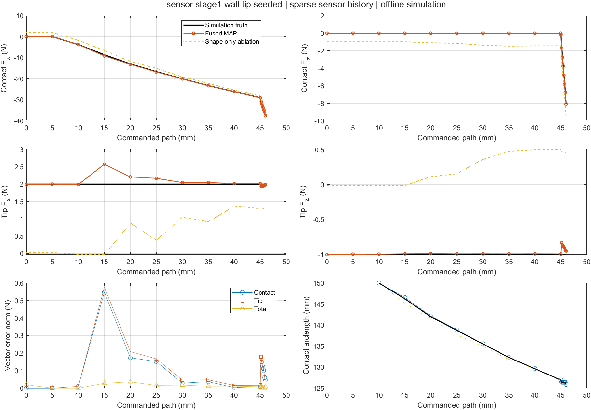
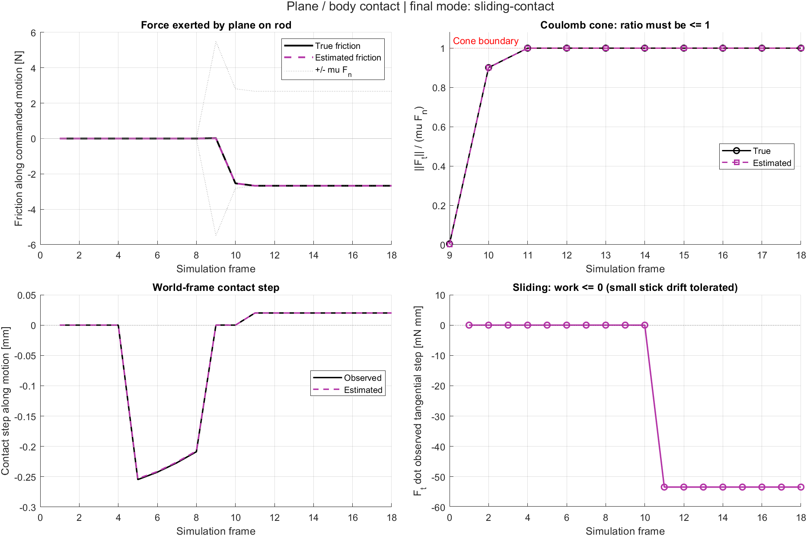
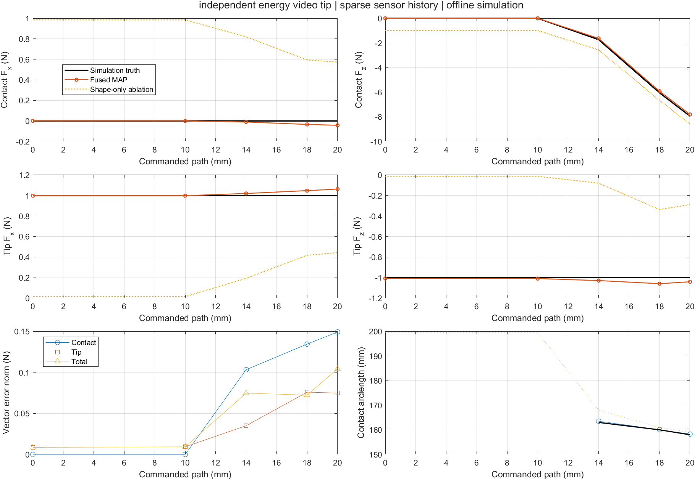
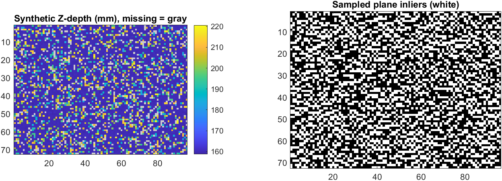

Abstract
A slender continuum rod bends when it touches an object. We want the forces that the object exerts on the rod, using only sparse bending measurements, commanded base motion, and a geometric model of the contact surface — not a force sensor at the contact.
FiRCE (Friction-informed Rod Contact Estimation) treats this as a constrained inverse problem. Simulated fiber Bragg grating (FBG) samples are interpolated relative to a calibrated intrinsic curvature, then a constrained MAP / iterated EKF update estimates contact location, a polyhedral Coulomb friction force, and an independent tip load. Unilateral contact and friction complementarity are enforced when the data can resolve stick versus slip. When paired curvature noise makes that mode unidentifiable, the estimator keeps the friction cone but withholds exact tangential kinematics and flags the frame for review.
On calibrated, noise-free planar simulations, FiRCE recovers contact and tip forces on the hooked-rod trajectory to about 0.016 N RMSE, and it separates a nonzero unknown tip load from body contact. A synthetic metric-depth frontend can supply the plane with covariance. All numbers on this page are offline simulations. They are not a hardware, real-time, or publication-ready claim.
Method
Sparse shape only
Inputs are 24 simulated FBG bending samples, base pose, and a plane. Dense forward shape is not passed to the estimator.
One equivalent contact
State includes plane pose, contact arclength, normal force, friction generators, and an independent tip load.
Complementarity
A 16-sided polyhedral cone encodes Coulomb friction on displacement increments, not velocities.
Unresolved mode
If curvature noise crosses the stick/slip boundary, FiRCE does not invent a direction. It reports review-required frames.
g = nᵀ (p_contact − p_plane) ≥ 0, fn ≥ 0, g fn = 0
β ≥ 0, Σβ ≤ μ fn, w = Dᵀ vt + λ ≥ 0, β ∘ w = 0
Forces are world-frame loads on the rod, in newtons. Positions and one-step contact displacements are in millimetres. The plane normal points from the obstacle into free space.
Why this is hard

A naive reconstruction of the same hooked-rod motion can look physically wild even when a video exists. Shape error grows to more than 150 mm. Matching a video is not the same as recovering forces.

FiRCE uses an explicit 200 mm hooked-rod model (120 mm straight, 30 mm hook radius) rather than treating the video as recovered hardware parameters. The green overlay is that kinematic model.
Results
The videos below are independent inverse estimates on simulated sensor packets. Playback interpolates 18 estimated frames; it is not a second solver running at video rate.
Hooked rod, body contact
Push into a ceiling, then slide. Contact / tip / total RMSE = 0.016 / 0.017 / 0.031 N. Maximum shape RMSE = 0.0015 mm.
Wall contact + unknown tip
True tip load [2, 0, −1] N, unknown to the estimator. Contact / tip / total RMSE = 0.159 / 0.168 / 0.014 N. Total force can look excellent while the split is harder.
Same wall, rotated 90°
A full 90° rotation of the wall geometry. Used as an equivariance check, not as a new physical scene.
Source video used only for geometry
This source clip motivated the hooked-rod dimensions. It is not a hardware experiment and is not used as a sensor stream.
Environment constraints separate the split

On the hooked rod, a shape-only ablation can win on total-force RMSE (0.011 vs 0.031 N) while losing on the contact/tip split (0.041 / 0.034 vs 0.016 / 0.017 N). Total force is not identifiability.

With a nonzero unknown tip load, shape-only contact/tip RMSE jumps to 1.81 / 1.81 N. FiRCE stays at 0.159 / 0.168 N. The plane constraint is doing the work.

Friction direction, cone utilization, contact step, and sliding work are checked independently of the force plot. Sliding work must not be positive.

An independent planar energy model, not the original LCP, supplies a second truth for a short frictionless trajectory: contact / tip / total RMSE = 0.101 / 0.050 / 0.066 N. Mesh refinement can still move reaction forces by ~0.10 N, so this is not a converged continuum certificate.
| Experiment | Frames | Contact RMSE | Tip RMSE | Total RMSE | What it shows |
|---|---|---|---|---|---|
| Hooked rod, noise-free | 18 | 0.016 N | 0.017 N | 0.031 N | Calibrated planar simulation, sparse history |
| Same input, shape-only | 18 | 0.041 N | 0.034 N | 0.011 N | Better total, worse split |
| Wall + unknown tip | 18 | 0.159 N | 0.168 N | 0.014 N | Environment needed to separate loads |
| Shape-only on wall + tip | 18 | 1.81 N | 1.81 N | 0.098 N | Cannot split without the plane |
| Independent energy truth | 5 | 0.101 N | 0.050 N | 0.066 N | Frictionless; not mesh-converged |
| Curvature noise, 3 seeds | 6 | 0.56–0.98 N | 0.55–0.73 N | 0.29–0.49 N | Last frames unresolved; not general robustness |
| Synthetic depth, clean / noisy | 6 | 0.017 / 0.385 N | 0.020 / 0.273 N | 0.034 / 0.252 N | No real camera; noisy last frames unresolved |
RMSE values are vector errors of world-frame forces on the rod. Do not average total-force RMSE with component RMSE, and do not mix noise-free rows with noise rows.
Depth as an environment frontend

An optional path converts a calibrated metric Z image into a plane observation, including a 6×6 covariance on point and normal. The estimator whitens that observation with the rest of the MAP residual.
The figure is a synthetic depth image with 0.35 mm noise, 20% outliers, and 10% missing pixels. Plane offset error stayed below 0.013 mm. This is not monocular RGB, not a real camera, and not scene understanding.
What this page does not claim
- History shape is reconstructed from the previous sensor sample, not jointly marginalized into the force covariance.
- One equivalent contact only; no multi-contact or full 3D surface model.
- Independent frictional truth, model mismatch, and statistical coverage remain open.
- MATLAB code lives in universeleaf/force-sensor. Entry points:
force('sensor-video'),force('sensor-tip'),force('noise'),force('depth').
BibTeX
@misc{wang2026firce,
author = {Wang, Tongyu},
title = {{FiRCE}: Friction-informed Rod Contact Estimation},
year = {2026},
note = {Project page},
url = {https://universeleaf.github.io/firce.github.io/}
}